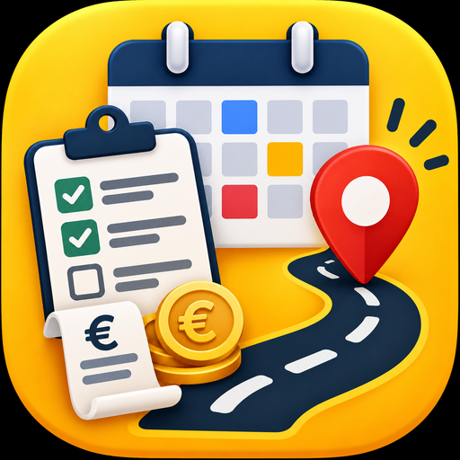

Πελάτες, δουλειές, υπενθυμίσεις,
διαδρομές, ταμείο και προσφορές.
Μπαίνεις κατευθείαν, χωρίς λογαριασμό και χωρίς κωδικούς. Τον πρώτο μήνα δουλεύουν τα πάντα. Μετά συνεχίζεις δωρεάν με τις δουλειές, τους πελάτες, τις υπενθυμίσεις, τη διαδρομή και το ταμείο — και ό,τι έχεις γράψει μένει όλο στη θέση του.
Μόνο στο κινητό σου. Δεν ανεβαίνουν πουθενά και δεν τα βλέπει κανείς άλλος — ούτε εγώ. Γι' αυτό κράτα και αντίγραφο από τις Ρυθμίσεις.
Συνεχίζεις κανονικά και δωρεάν: δουλειές, πελάτες, υπενθυμίσεις, διαδρομή, ταμείο. Κλειδώνουν μόνο οι προσφορές και οι αποδείξεις με το λογότυπό σου, το ύφος των εγγράφων και τα στατιστικά. Τα στοιχεία σου δεν χάνονται ποτέ.
Όχι για τη δουλειά της. Μόλις εγκατασταθεί ανοίγει και γράφει κανονικά χωρίς σήμα. Σύνδεση θέλει μόνο ο χάρτης και η αποστολή μηνυμάτων.
Ελάχιστο — λιγότερο από μία φωτογραφία. Χώρο πιάνουν μόνο οι φωτογραφίες που βάζεις εσύ στις δουλειές.
Μόνη της. Κλείσε και ξανάνοιξε την εφαρμογή και είσαι στην τελευταία έκδοση — δεν χάνεται τίποτα από όσα έχεις γράψει.
Πατάς παρατεταμένα το εικονίδιο και «Κατάργηση εγκατάστασης», όπως κάθε εφαρμογή. Πριν το κάνεις, κράτα αντίγραφο από τις Ρυθμίσεις.